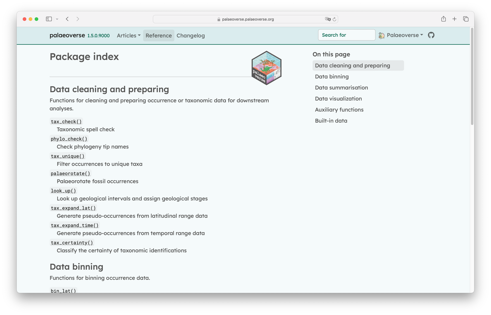

# Load library
library(palaeoverse)
# Get example data
data(tetrapods)
# Get time bins
bins <- time_bins(interval = "Phanerozoic", rank = "stage")
# Bin data temporally
tetrapods |>
bin_time(bins = bins, method = "mid")An introduction to the palaeoverse R package
r
data
explore
prepare
This module introduces palaeoverse, an R package that provides shared, reproducible tools for preparing, and analysing palaeontological data.
NotePackages used in this module
install.packages(c("palaeoverse", "remotes"))1 Introduction
Computational tools are now at the heart of modern palaeontology. From cleaning datasets to running complex analyses, software underpins much of what we do. This module introduces you to palaeoverse, an R package to help you get your palaeontological data into the right shape for analyses and keep your code clear. palaeoverse aims to slot neatly alongside the methods you already use, while improving the readability, transparency and reproducibility of your code.
1.1 Learning objectives
By the end of this module, you will be able to:
- Install and load palaeoverse, as well as locate its documentation, vignettes, and help resources
- Understand the design and potential applications of palaeoverse
- Apply palaeoverse functions to explore, prepare, and visualise fossil occurrence data
- Identify the functions available in palaeoverse and implement them into your own research
1.2 Prerequisites
You should be comfortable with basic R (data frames, functions, installing packages). Experience with fossil occurrence data, for example from the Paleobiology Database (PBDB), is also helpful but not required.
1.3 Why use palaeoverse
Palaeobiological analyses rarely go straight from raw data to results. First you need to check names, bin occurrences in time, and work out where your fossils sat on the ancient Earth, etc. These steps are essential but repetitive, and often rewritten for every project. palaeoverse aims to make these efforts more reusable, reproducible, and readable by:
- replacing long, bespoke scripts with a few clear lines of code
- using consistent function names, arguments, and outputs make your scripts easier to read and share
- developing well-documented, tested, and peer-reviewed functions which are transparent and robust
2 Design
palaeoverse is built around a small set of principles that shape how the functions look and behave.
- Built around occurrence data: most functions expect an occurrence
data.frameas input
NoteAnatomy of an occurrence dataset
Each row is a single record of something present at a particular place and time. That “something” is usually a taxon, but it does not have to be. For example, in the in-built reefs dataset, each row is a fossil reef rather than a species.
Occurrence data typically include columns describing:
- Taxonomy (e.g. accepted name, genus, and family)
- Age (e.g. maximum and minimum ages or named intervals)
- Location (e.g. longitude and latitude)
- Additional context (formation, collection, or reference)
- Modular: each function does one job well, you can use a single function in isolation or chain several together
- Flexible: functions are not tied to a single data source (e.g. Paleobiology Database), column names are generally arguments rather than fixed requirements, so you can use data from any source with ease
# Load library
library(palaeoverse)
# Example data
data(tetrapods)
# Use custom input `name`
tax_range_time(occdf = tetrapods, name = "accepted_name")- Transparent and reproducible: all code is documented and open source, so it can be reviewed by anyone
- Well documented: every function has a help page with worked examples to help users get started
- Community driven: developed openly, with peer-review from fellow researchers, and users encouraged to suggest features, report bugs, and contribute
3 Applications
Typical applications for palaeoverse include:
- Cleaning and standardising occurrence data (e.g. checking taxonomic names and removing duplicates)
- Binning occurrences into temporal and spatial units (e.g. for analyses of diversity and biogeography)
- Estimating the position of organisms at time of deposition (i.e. palaeogeographic reconstruction)
- Summarising taxa, such as estimating temporal and geographic ranges
These steps can feed into a wide range of downstream analyses, including diversity dynamics, macroevolution, macroecology and biogeography.
NoteWhere does palaeoverse fit?
Think of palaeoverse as the bridge between raw occurrence data and the analytical methods you want to apply.
4 Installation
To install the current release of palaeoverse from CRAN (recommended), use:
install.packages("palaeoverse")To install the development version, first install the remotes package, and then use install_github() to install palaeoverse directly from GitHub:
install.packages("remotes")
remotes::install_github("palaeoverse/palaeoverse")Now you are able to load palaeoverse:
library(palaeoverse)5 Getting help
Everyone gets stuck with using new tools, and knowing where to look is one of the most useful skills you can develop. As with most packages, palaeoverse has several layers of support, from built-in documentation to wider community support.
The palaeoverse website hosts the full function documentation, vignettes and news on new releases. It is searchable and can be easier to browse than the help pages in R for some users.

If you are familiar with GitHub, you can also check existing issues within the dedicated repository, as someone may already have asked your question. If you cannot find an answer to your question, you can open an issue on GitHub (see best practises).
GitHub can be a scary place if you are not familiar with it. So, you can also reach out by email if you are facing difficulties or join our Zulip, and raise a topic.
NoteCiting palaeoverse
A quick note on behalf of the developers. If you use palaeoverse in your research, please cite the associated publication. Citations are one of the main ways our work is acknowledged, and they help keep the package maintained and improved (read more on this topic). You can access the appropriate citation via:
citation("palaeoverse")6 Exercises
Now you’ve got an onverview of the package, it’s time to work through some applied exercises to practice using palaeoverse in a research context:
- Exercise 1: Alpha diversity and geographic range size of Carboniferous and Permian tetrapods
- Exercise 2: Latitudinal trends in Phanerozoic reefs
Session info
─ Session info ───────────────────────────────────────────────────────────────
setting value
version R version 4.6.1 (2026-06-24)
os Ubuntu 26.04.1 LTS
system x86_64, linux-gnu
ui X11
language (EN)
collate C.UTF-8
ctype C.UTF-8
tz UTC
date 2026-10-26
pandoc 3.7.0.2 @ /usr/bin/pandoc
quarto 1.10.19 @ /usr/local/bin/quarto
─ Packages ───────────────────────────────────────────────────────────────────
! package * version date (UTC) lib source
ape 5.8-1 2024-12-16 [1] RSPM
askpass 1.2.1 2024-10-04 [1] RSPM
class 7.3-23 2025-01-01 [2] CRAN (R 4.6.1)
classInt 0.4-11 2025-01-08 [1] RSPM
cli 3.6.6 2026-04-09 [1] RSPM
R cpp11 <NA> <NA> [?] <NA>
curl 8.1.0 2026-10-14 [1] RSPM
DBI 1.3.0 2026-02-25 [1] RSPM
digest 0.6.39 2025-11-19 [1] RSPM
dplyr 1.2.1 2026-04-03 [1] RSPM
e1071 1.7-17 2025-12-18 [1] RSPM
generics 0.1.4 2025-05-09 [1] RSPM
geojsonsf 2.0.5 2025-11-26 [1] RSPM
R geometries <NA> <NA> [?] <NA>
geosphere 1.6-8 2026-04-05 [1] RSPM
glue 1.8.1 2026-04-17 [1] RSPM
h3jsr 1.3.1 2023-01-21 [1] RSPM
httr 1.4.9 2026-09-01 [1] RSPM
R jsonify <NA> <NA> [?] <NA>
jsonlite 2.0.0 2025-03-27 [1] RSPM
KernSmooth 2.23-26 2025-01-01 [2] CRAN (R 4.6.1)
lattice 0.22-9 2026-02-09 [2] CRAN (R 4.6.1)
lifecycle 1.0.5 2026-01-08 [1] RSPM
magrittr 2.0.5 2026-04-04 [1] RSPM
MASS 7.3-65 2025-02-28 [2] CRAN (R 4.6.1)
mime 0.13 2025-03-17 [1] RSPM
nlme 3.1-169 2026-03-27 [2] CRAN (R 4.6.1)
openssl 2.4.2 2026-06-09 [1] RSPM
palaeoverse 1.5.0 2026-06-11 [1] RSPM
pbapply 1.7-5 2026-09-01 [1] RSPM
pillar 1.11.1 2025-09-17 [1] RSPM
pkgconfig 2.0.3 2019-09-22 [1] RSPM
proxy 0.4-29 2025-12-29 [1] RSPM
purrr 1.2.2 2026-04-10 [1] RSPM
R6 2.6.1 2025-02-15 [1] RSPM
R rapidjsonr <NA> <NA> [?] <NA>
Rcpp 1.1.2 2026-07-05 [1] RSPM
remotes 2.5.0 2024-03-17 [1] RSPM
rlang 1.3.0 2026-07-05 [1] RSPM
s2 1.1.13 2026-09-28 [1] RSPM
sf 1.1-3 2026-09-11 [1] RSPM
R sfheaders <NA> <NA> [?] <NA>
stringdist 0.9.17 2026-01-16 [1] RSPM
stringi 1.8.9 2026-08-04 [1] RSPM
stringr 1.6.0 2025-11-04 [1] RSPM
sys 3.4.3 2024-10-04 [1] RSPM
tibble 3.3.1 2026-01-11 [1] RSPM
tidyr 1.3.2 2025-12-19 [1] RSPM
tidyselect 1.2.1 2024-03-11 [1] RSPM
units 1.0-1 2026-03-11 [1] RSPM
utf8 1.2.6 2025-06-08 [1] RSPM
V8 8.2.0 2026-04-21 [1] RSPM
vctrs 0.7.3 2026-04-11 [1] RSPM
withr 3.0.3 2026-06-19 [1] RSPM
wk 0.9.5 2025-12-18 [1] RSPM
[1] /home/runner/work/_temp/Library
[2] /opt/R/4.6.1/lib/R/library
R ── Package was removed from disk.
──────────────────────────────────────────────────────────────────────────────